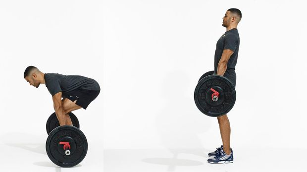

Many people who ar entering upon a back exercises bodybuilding program aspire to that healthy rugged look and immediately think about great abs, powerful chest, and sensational biceps. Unfortunately, the back muscles ar often overlooked, and in some cases actually avoided. The truth is, you can’t build a great body without attention to all muscle groups with equal enthusiasm, and the back is one of the most important muscle groups to develop, because a strong back enables you to work all of the other muscle groups more efficiently.
Best Back exercices
Deadlift

Deadlifts are highly effective at increasing functional strength due to the activation of your largest lower body muscles.
They also train you for the functional activity of safely lifting objects off of the floor, which is a key skill for day-to-day activities.
- 
Pull-Up

Pull-ups are one of the most effective back strengthening exercises.
While many guys tend to focus on the muscles in the front of the body—abs, chest, biceps,
and shoulders, working the back of the body is equally important to keep the body balanced, prevent injuries, and improve overall functional strength.
Pull-ups strengthen the latissimus dorsi, trapezius, erector spinae in the thoracic region, levator scapulae, and infraspinatus.
T-Bar Row

The T-Bar Row is a staple and popular bodybuilding movement that effectively isolates your upper back and lats.
Lat pull downs and pull ups, will help you gain a wider and stronger back, but the row, will help you improve muscle maturity and build a thick muscular back.


Single-Arm Dumbbell Row

A well-executed one arm dumbbell row builds a strong back. It all strengthens your shoulders, upper arms, and core.
These benefits will help you perform many everyday activities with greater ease and less discomfort. You will bend, lift, and carry more effortlessly. You will work in the garden, rearrange the furniture, or roughhouse with the kids with less likelihood of stiffness, pain, or injury.
Lat Pull-Down

The lat pulldown is a fantastic exercise to strengthen the latissimus dorsi muscle, the broadest muscle in your back, which promotes good postures and spinal stability.
Form is crucial when performing a lat pulldown to prevent injury and reap the best results.